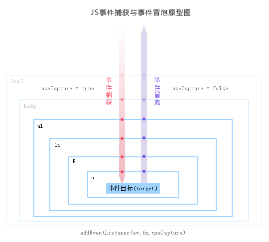

分享人：顾仁鹏
目录
1.背景介绍
2.知识剖析
3.常见问题
4.解决方案
5.编码实战
6.扩展思考
7.参考文献
8.更多讨论
事件处理程序可以为现代web应用程序提供交互能力，因此许多开发人员会向页面中添加大量的处理程序。但是在JavaScript中，添加到页面中的事件处理程序的数量会直接影响页面的整体运行性能。 理由： 1.每个函数都是对象，都会占用内存。 2.事先指定所有的事件处理程序会导致DOM的访问次数增加，会延迟整个页面的交互时间。 对“事件处理程序过多”问题的解决方案就是事件委托（Delegation）。--JavaScript高级程序设计 3.事件委托的基本实现方式：在DOM树中尽量高的节点添加事件处理程序，代替在其多个子节点中添加。 今天就主要介绍一下javascript delegate的用法和原理，以及jQuery等框架中delegate的应用。
当我们需要对很多元素添加事件的时候，可以通过将事件添加到它们的父节点，从而将事件委托给父节点来触发处理函数。 假设有一个 UL 的父节点，包含了很多个 Li 的子节点： 当某个Li被点击的时候需要触发相应的处理事件。我们通常的写法，是为每个Li都添加一些onClick之类的事件监听。 demo1
如果这个UL中的Li子元素会频繁地添加或者删除，我们就需要在每次添加Li的时候都调用这个addListeners4Li方法来为每个Li节点添加事件处理函数。这就添加的复杂度和出错的可能性，并且加大了内存的占用。 js中添加的事件处理程序的数量直接影响页面整体运行的性能那么如何提升性能？更简单的方法是使用事件代理机制，当事件被抛到更上层的父节点的时候，我们通过检查事件的目标对象（target）来判断并获取事件源Li。 （有些情况下及时的移除不需要的事件处理程序也是提升性能的一种解决方案） 下页的代码可以完成我们想要的效果：
代码演示：demo2
为父节点添加一个click事件，当子节点被点击的时候，click事件会从子节点开始向上冒泡。父节点捕获到事件之后，通过判断e.target.nodeName来判断是否为我们需要处理的节点。并且通过e.target拿到了被点击的Li节点。从而可以获取到相应的信息，并作处理。
DOM2.0模型将事件处理流程分为三个阶段：一、事件捕获阶段，二、事件目标阶段，三、事件起泡阶段。如图：
事件捕获：当某个元素触发某个事件（如onclick），顶层对象document就会发出一个事件流，随着DOM树的节点向目标元素节点流去，直到到达事件真正发生的目标元素。在这个过程中，事件相应的监听函数是不会被触发的。 事件目标：当到达目标元素之后，执行目标元素该事件相应的处理函数。如果没有绑定监听函数，那就不执行。 事件起泡：从目标元素开始，往顶层元素传播。途中如果有节点绑定了相应的事件处理函数，这些函数都会被触发。
通过刚才的对比介绍，大家应该能够体会到使用事件委托对于web应用程序带来的几个优点： 1.管理的函数变少了。不需要为每个元素都添加监听函数。对于同一个父节点下面类似的子元素，可以通过委托给父元素的监听函数来处理事件。 2.可以方便地动态添加和修改元素，不需要因为元素的改动而修改事件绑定。 3.JavaScript和DOM节点之间的关联变少了，这样也就减少了因循环引用而带来的内存泄漏发生的概率。
在jQuery中如何使用delegate方法？
jQuery的delegate的方法有四个参数，childSelector，一个事件名称，规定传递到函数的额外数据（可选），和事件处理函数。 $(selector).delegate(childSelector,event,data,function) demo3
demo已在之前几页讲过，详细代码链接如下 demo链接
什么样的事件可以用事件委托，什么样的事件不可以用呢？ 适合用事件委托的事件：click，mousedown，mouseup，keydown，keyup，keypress。（所有用到按钮的事件，多数的鼠标事件和键盘事件） 值得注意的是，mouseover和mouseout虽然也有事件冒泡，但是处理它们的时候需要特别的注意，因为需要经常计算它们的位置，处理起来不太容易。 不适合的就有很多了，举个例子，mousemove，每次都要计算它的位置，非常不好把控，在不如说focus，blur之类的，本身就没用冒泡的特性，自然就不能用事件委托了。
参考一：陈鑫伟的博客
参考二：tony1223
1、如何在jquery中使用事件委托？
on方法的语法 $(selector).on(event,childSelector,function(){}) on方法语法，绑定在父元素上 事件，子选择器，回调函数
2、事件委托中，只想触发特定元素的事件怎么办？
Event对象提供了一个属性叫target，可以返回事件的目标节点，我们成为事件源，也就是说，target就可以表示为当前的事件操作的dom，那么如果是新增的节点，新增的节点会有事件吗？一个新员工来了，他能收到快递吗？是可以的
3、事件委托解决的问题：
a-可以绑定文档完成后新出现的子元素
b-指定绑定事件的范围（父元素）
c-不需要为每个元素设置绑定
感谢大家观看
BY :顾仁鹏|郭晨阳